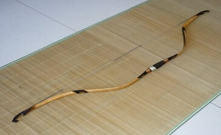
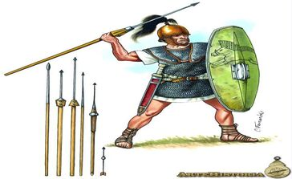

Romanas
Arco compósito
O arco só veio ser usado tardiamente pelos romanos. Eles usavam o arco compósito, que
é um arco tradicional construído de madeira, osso ou chifre, e tendões de animais.

Espata (spatha)
A spatha era a espada típica da cavalaria romana. Era uma espada que se opunha ao gládio
em muitas maneiras. Ao contrário do gládio, o spatha era uma espada longa. Era também esperado
dos cavaleiros que usassem um estilo de combate em que cortassem, não que apunhalassem o inimigo.
A spatha tinha entre 75 cm e 1 metro de comprimento.

Pilo (pillum)
O pilo foi um aperfeiçoamento do dardo comum. Ele tinha uma ponta de metal piramidal para ser
difícil de ser arrancado, um longo pescoço de metal para resistir a tentativas de decepar a
ponta com golpe de espada e para que a ponteira toda se dobrasse ao invés de se quebrar. Era indispensável
para o sucesso do exército romano. O pilum foi feito de modo a que depois de embater no escudo ou noutro
sítio, entortasse, para que o adversário não o pudesse recuperar. Para além disto, se fosse contra o escudo,
obrigaria o adversário a livrar-se dele, tornando-o vulnerável. O pilum tinha 2 metros de comprimento, entre
2 e 5 kg de peso e foi feita para ter um alcance de aproximadamente 30 metros.

Púgio (pugio)
O pugio era uma pequena adaga romana que era também usada fora do exército, em suicídios ou em
assassinatos, sendo que, por exemplo, Júlio César foi assassinado com o auxílio de pugios. O pugio era
uma arma auxiliar romana, sendo normalmente usada com o gládio. O pugio tinha entre 18 e 28 cm de comprimento e pelo menos 5 cm de largura.
Estas medidas foram as primeiras, sendo que o pugio ainda sofreu algumas alterações posteriormente.